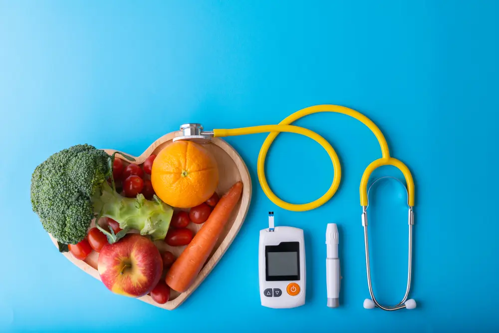

Observação clínica: é uma plataforma para profissionais de saúde e pacientes que buscam praticidade, segurança e eficiência do seu quotidiano. Ferramentas rápidas e confiáveis para profissionais e pacientes, facilitando o cuidado com a saúde.
A plataforma apresenta as seguintes funcionalidades: Calcule IMC, calcular data da última menstruação, calcular a sua idade gestacional, crie prescrições médicas e faça diluições de medicamentos de forma prática e segura.
Nossa plataforma é ideal tanto para consultórios e clínicas, quanto para uso individual, permitindo que profissionais economizem tempo em tarefas administrativas e foquem no que realmente importa: o cuidado de qualidade com o paciente.
Calcule também: a dose conforme prescrição médica na reconstituição ou diluição.
A observação clínica é mais do que um conjunto de ferramentas digitais: é uma parceira confiável na promoção de melhores práticas de saúde, combinando tecnologia, ciência e cuidado humano. Facilite seu trabalho, organize suas informações e proporcione um atendimento mais seguro e eficiente a todos os pacientes.
Ferramentas disponíveis

Nosso objetivo é simplificar as tarefas cotidianas da área da saúde, oferecendo ferramentas que combinam ciência, tecnologia e confiabilidade. Automatizamos cálculos clínicos repetitivos (como IMC, dosagens e diluições), organizamos informações essenciais em interfaces intuitivas e padronizamos procedimentos para reduzir erros. Isso libera tempo para que profissionais concentrem-se no cuidado ao paciente, em vez de tarefas administrativas.
Valorizamos a precisão científica: cada funcionalidade é baseada em fórmulas e protocolos reconhecidos, com campos de entrada e alertas que ajudam a prevenir equívocos. Ao mesmo tempo, investimos em tecnologia moderna interfaces responsivas, validações em tempo real e armazenamento seguro para que a experiência seja rápida, acessível e confiável, tanto em desktops quanto em dispositivos móveis.
Acreditamos que ferramentas bem-desenhadas promovem segurança. Por isso, nossa plataforma dá suporte à tomada de decisão, apresentando resultados claros, contextualizações e recomendações para revisão clínica, sem substituir o julgamento profissional. O nosso maior valor é a vida.
Aviso importante
Esta plataforma oferece informações de saúde, cálculos de IMC e outras ferramentas apenas para fins educativos e informativos. Não substitui orientação médica profissional. Consulte sempre um profissional de saúde antes de tomar decisão relacionada à sua saúde.